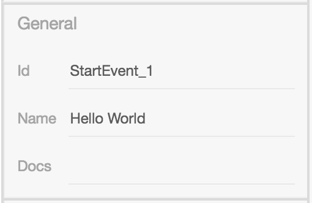
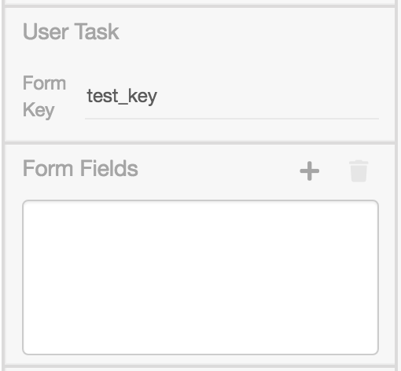
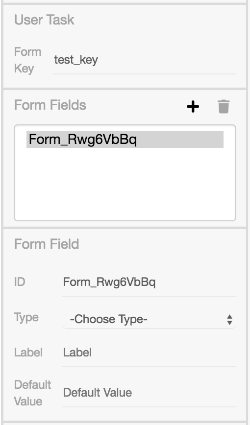
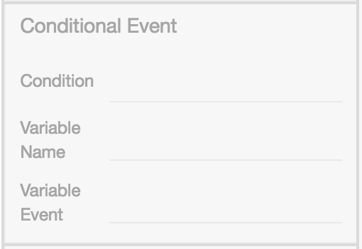
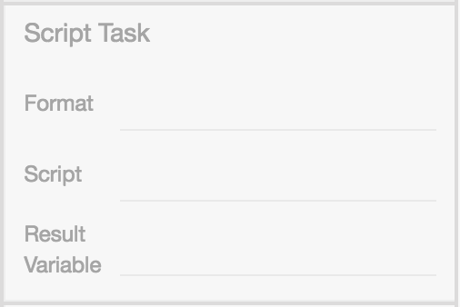
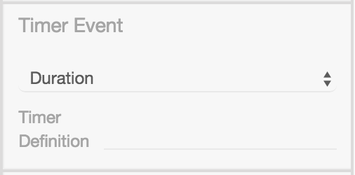
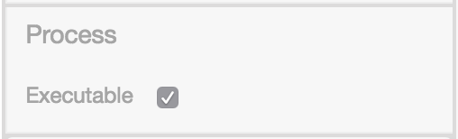
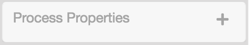
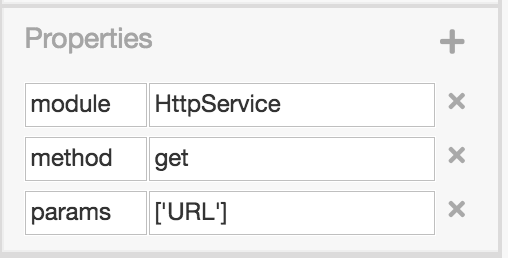

Basic Editing
Modeler
Im Kern benutzt BPMN-Studio bpmn-js um das Editieren und Designen von Diagrammen zu ermöglichen.
Das Tool bpmn-js, das sich intern auf diagram-js stützt, ist ein Unterprojekt von bpmn.io. Das Projekt bpmn.io ist ein Open-Source-Projekt von camunda.
Weitere Informationen finden Sie auf der Website zu bpmn.io.
Für eine genaue Anleitung zur Modellierung von BPMN-Diagrammen und Prozessen, bietet das Tutorial von camunda einen guten Einstieg.
Property Panel
Das Property Panel im BPMN-Studio ist eine Erweiterung für die bpmn-io Komponente (Modeler/Designer) und ist in der Design-Ansicht auf der rechten Seite zu finden.
Über den Button in der Ecke rechts oben ist es möglich das Property Panel ein- bzw. auszublenden.
Das Property Panel erlaubt es Benutzern Eigenschaften an einzelnen BPMN-Elementen hinzuzufügen, zu entfernen und zu konfigurieren. Diese Eigenschaften sind unsichtbar und werden nicht in der grafischen Darstellung zur Anzeige gebracht
Verschiedene BPMN-Elemente haben unterschiedliche Konfiguratinsmöglichkeiten im Property Panel. Im Nachfolgenden, werden diese Möglichkeiten beschrieben.
Die Abschnitte
General SectionundProperties SectioncreateCamundaProperties
sind für alle Elemente vorhanden.
Darüber hinaus gibt es Möglichkeiten, die abhängig von dem ausgewähltem Element sind. Im Property Panel gibt es folgende Sections:
- General (alle Elemente)
- Forms (UserTasks)
- Message (Receive Task, Start/Boundary Events)
- Escalation (Boundary/End Events)
- Error (Boundary/End Events)
- Signal (Start/Boundary/End Events)
- Conditional (Start/Boundary/End Events)
- Script (ScriptTasks)
- Call Activity (Call Activity Task)
- Timer (Start/Boundary Events)
- Process (Collaboration)
- Properties (alle Elemente)
General
Die General Section behandelt mit
- ID,
- Name,
- und Docs
die grundlegenden Informationen eines Elements.
Beispiel:

Das ID-Feld enthält eine technische ID; sie wird automatisch vergeben und sollte nicht verändert werden.
Das Name-Feld ist der Anzeigename des Elements und wird auf der grafischen Darstellung angezeigt. Die genaue Position ist abhängig von dem Element und kann
- unter dem Element (z.B. Events),
- in dem Element (z.B. Tasks, Lanes),
- nicht (z.B. Gateways)
angezeigt werden.
Das Docs-Feld wird zur Dokumentation des Elements gedacht; es kann ein Freitext platziert werden.
Dieser Text wird in dem BPMN-XML gespeichert und weitergeben. Damit ist die Dokumentation eines Elementes für andere sichtbar.
Tipp: In dem Docs-Feld ist eine gute Beschreibung hilfreich, sie ist im Diagramm nur nicht sichtbar; ist eine sichtbare Anmerkung im Diagramm gewünscht, kann alternativ/zusätzlich eine TextAnnotation verwendet werden.
Forms
Die komplette Forms Section ist nur sichtbar, wenn ein UserTask ausgewählt ist.
Es können mehrere Form Fields angelegt und entfernt werden.
Zusätzlich kann man für jeden UserTask optional einen Form Key setzen.
Wenn ein UserTask angewählt ist, sieht die Forms Section so aus:

Nach dem hinzufügen eines Form Fields über den + Button, erscheint ein
weiterer Teil der Section:

In der Form Field Section gibt es die Möglichkeit festzulegen
- welche ID das Form Field erhalten soll,
- welchen Typ das Form Field haben soll,
- welches Label gesetzt werden soll,
- welcher Standardwert enthalten sein soll.
Wichtig: Die ID ist ein Pflichtfeld. Sie muss einmalig und nicht leer sein.
Es stehen folgende Typen als Auswahl zur Verfügung:
TextIntegerDecimalTruth ValueDateEnumCustom
Info:
Wenn der Typ Enum ausgewählt ist, erscheint eine weitere Section,
in der anhand von Key-Value-Paaren angegeben wird, welche Einträge
die Enum-Auswahl beinhalten soll.
Im BPMN-Studio wird ein UserTask vom Typ Enum während der Ausführung als
Dropdown dargestellt.
Dynamische Werte für Formularfelder
Bei der Anzeige von UserTasks kann es hilfreich sein, Beschriftungen mit dynamischen Werten zu versehen, die sich erst während der Prozessausführung ergeben.
Jeder Task, der im Diagramm ausgeführt wird, hält ein Zwischenergebnis fest. Auf
dieses Zwischenergebnis kann man sich mittels der Id des Tasks beziehen, der
das gewünschte Zwischenergebnis erzeugt hat.
Diese Funktion kann in den Werten für Label, Default Value genutzt
werden.
Zugriff auf die Token History
Nehmen wir einen UserTask mit einem Form Field an, der als Default Value das
Ergebnis eines vorherigen Tasks mit der Id "my_task" nutzen möchte. Der
Default Value wird hierbei folgendermaßen beschrieben:
${token.history.my_task}
Zugriff auf den aktuellen Token
Gehen wir vom gleichen Beispiel wie beim Zugriff auf die Token History aus.
Diesmal ist der Task mit der Id "my_task" der direkte Vorgänger des UserTasks.
In diesem Fall können wir den gleichen Wert wie zuvor über folgenden Wert
verwenden.
${token.current}
Darstellungsmöglichkeiten für User Tasks
Die Darstellungsweise der User Tasks kann über eine Property mit dem Namen
preferredControl festegelegt werden.
Aktuell ist das BPMN-Studio in der Lage User Tasks auf zwei verschiedenen Arten darzustellen:
- Als Formular
- Als Bestätigungsdialog
Das Formular ist die standardmäßige Darstellung von User Tasks. Diese wird ausgewählt wenn keine andere Darstellungsmöglichkeit gesetzt wurde.
Formulare zeigen alle Form Fields mit Text- oder Checkboxen an und haben einen
Cancel- und einen Continue-Button.
Der Cancel-Button bricht das Bearbeiten der User Task ab und leitet zur
Task-List weiter. Der Continue-Button schließt den User Task mit den
eingegebenen Daten ab.
Der Bestätigungsdialog wird durch
preferredControl confirm
ausgewählt. Dabei ist wichtig, dass confirm klein geschrieben wird.
Dieser Dialog besitzt die Besonderheit, dass ein Form Field vom Typ Truth Value
benötigt wird, welches beim Ausführen bestätigt werden soll. Das Label dieses
Form Fields wird als Nachricht zum Bestätigen genutzt.
Dazu wird das erste Form Field vom Typ Truth Value verwendet.
Alle anderen Form Fields, werden normal angezeigt, wie auch bei dem Formular.
Bestätigungsdialoge haben drei Button:
Cancel-ButtonDer
Cancel-Button bricht das Bearbeiten der User Task ab und leitet zur Task-List weiter.Confirm-ButtonDer
Confirm-Button bestätigt den Dialog und schließt den User Task mit den eingegebenen Daten ab.Das erste
Truth ValueForm Field bekommt als Werttruegesetzt.Decline-ButtonDer
Decline-Button lehnt den Dialog ab und schließt den User Task mit den eingegebenen Daten ab.Das erste
Truth ValueForm Field bekommt als Wertfalsegesetzt.
Message, Escalation, Error, Signal
Die
- Message Section,
- Escalation Section,
- Error Section und
- Signal Section
haben einen ähnlichen Aufbau. Alle Sections sind sichtbar, wenn entweder ein Boundary- oder ein End-Event von einem der genannten Typen angewählt ist.
Die Message Section wird auch bei einem angewähltem SendTask, oder
ReceiveTask angezeigt.
Die Sections folgen einem ähnlichen Aufbau: Über den +-Button kann
hinzugefügt werden.
Das hinzugefügte Event ist dann im Dropdown automatisch ausgewählt. Anschließend setzt man die Werte, wie zum Beispiel beim Error Event den
- Name,
- Code,
- und die Message.
So sieht zum Beispiel die Error Section aus:

Conditional Event
Die Conditional Event Section wird nur bei angewähltem Conditional Boundary
Event sichbar.
Hier kann
- eine Condition,
- ein Variable Name und
- ein Variable Event
angegeben werden.

Script
Die Script Section wird nur bei angewählten ScriptTask sichtbar.
Der ScriptTask wird mit
- dem Format,
- dem Script und
- einer Result Variablen
konfiguriert. Aktuell kann JavaScript als Code ausgeführt werden kann. Dafür bedient man sich des Script-Felds im Property Panel.
Beispiel:
Als Test kann man zum Beispiel console.log('Das ist ein Test!') angeben; es
würde im Backend während der Ausführung des Tasks geloggt werden.

Call Activity
Die Call Activity Section wird bei einem Call Activity Task angezeigt
und sieht wie folgt aus:

Wenn die Call Activity konfiguriert ist- also ein Prozess ausgewählt wurde- wird während der Ausführung der ausgewählte Prozess gestartet und nach Beendigung wieder zurück zum eigentlichen Prozess gewechselt.
Allerdings funktioniert es nur, wenn beide Prozesse auf der verbundenen ProcessEngine deployed sind.
Timer
Die Timer Section erscheint bei Timer Boundary Events.
Es gibt drei Modi:
- Date
- Duration
- Cycle
Info: Die Timer Definition muss im richtigen Format angegeben werden.
Das zu verwendende Zeitformat ist hier definiert.

Process
Das erscheinen der Process Section erreicht man, indem man kein Element
auswählt, sondern außerhalb einer Lane klickt.
Im Property Panel unter General beginnt nun die ID mit dem Text Collaboration
und zusätzlich die Process Section unter der General Section erscheinen.
Hier kann der Prozess als ausführbar gesetzt werden.

An einer Collaboration können zusätzlich, wie bei BPMN-Elementen Properties hinzugefügt werden.

Extension Properties
Die Extension Properties werden bei jedem BPMN-Element angezeigt. Mittels Key-Value-Paaren können dem Element Eigenschaften hinzugefügt werden.
Ein Anwendungsbeispiel ist zum Beispiel die Verwendung eines ServiceTasks.
Um einen ServiceTask zu konfigurieren muss dieser drei Eigenschaften erhalten.
Er erhält
- das Modul,
- die Methode und
- zugehörige Parameter
in Form einer Liste, welche mit eckigen Klammern umschlossen ist und deren Elemente mit Kommata getrennt werden.

Wichtig: Die URL muss in Anführungszeichen angegeben werden.